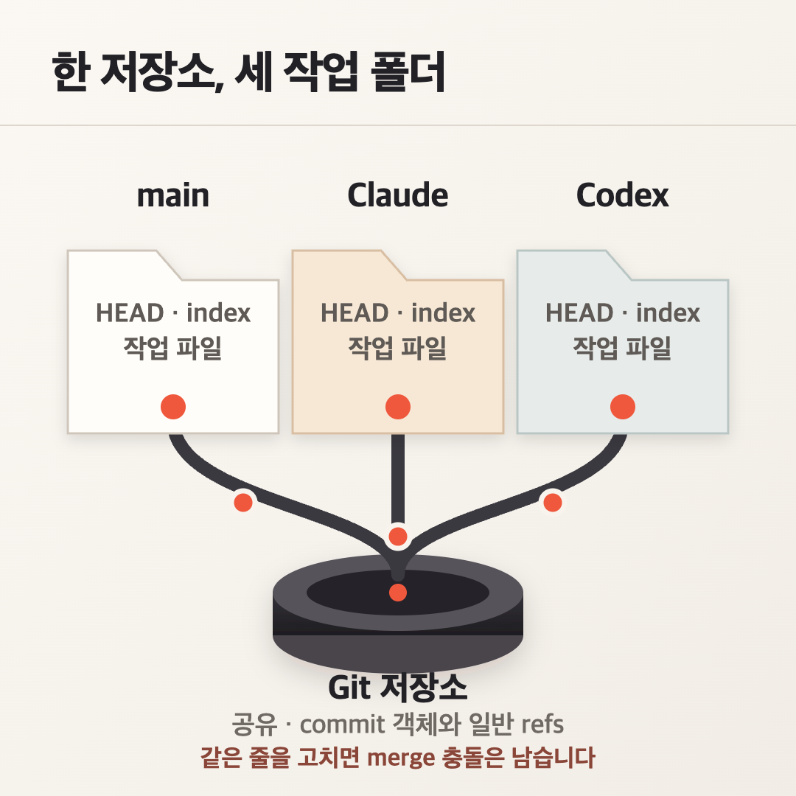
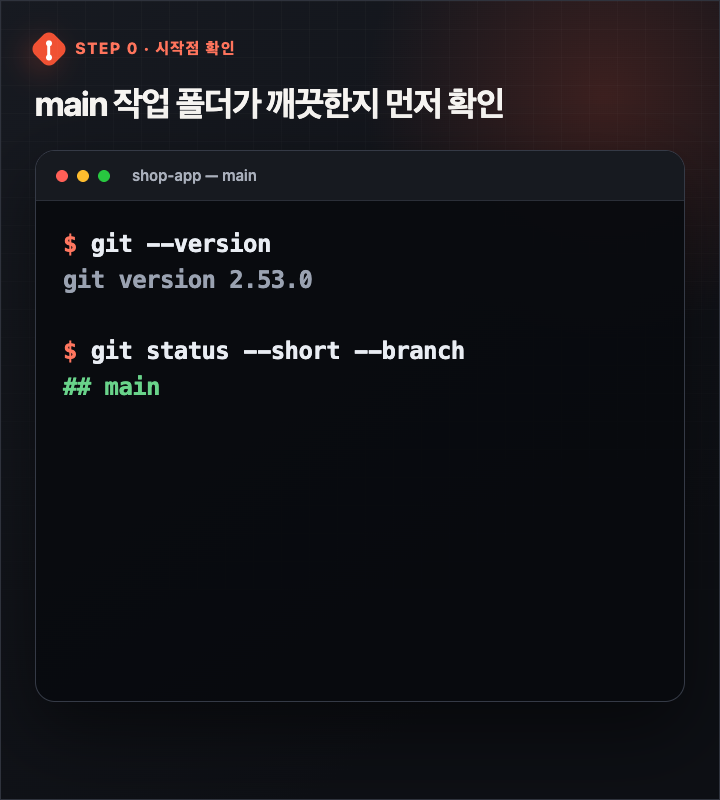
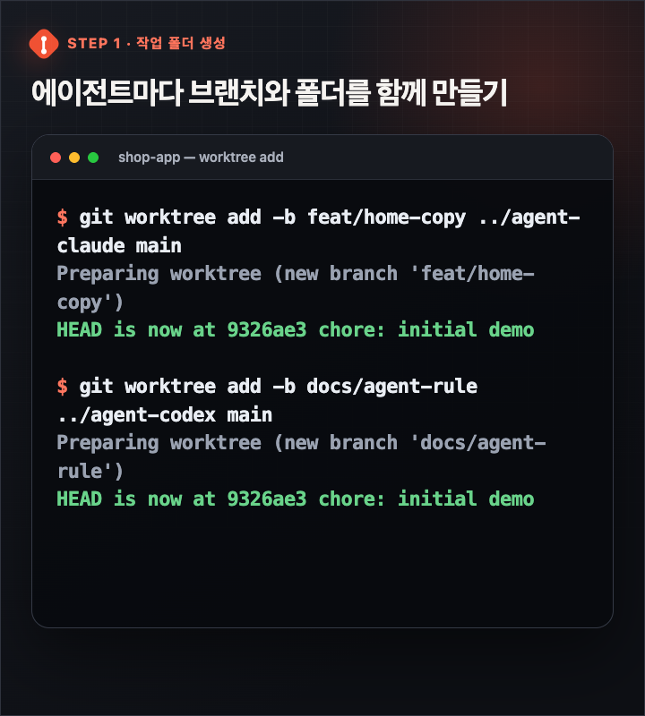
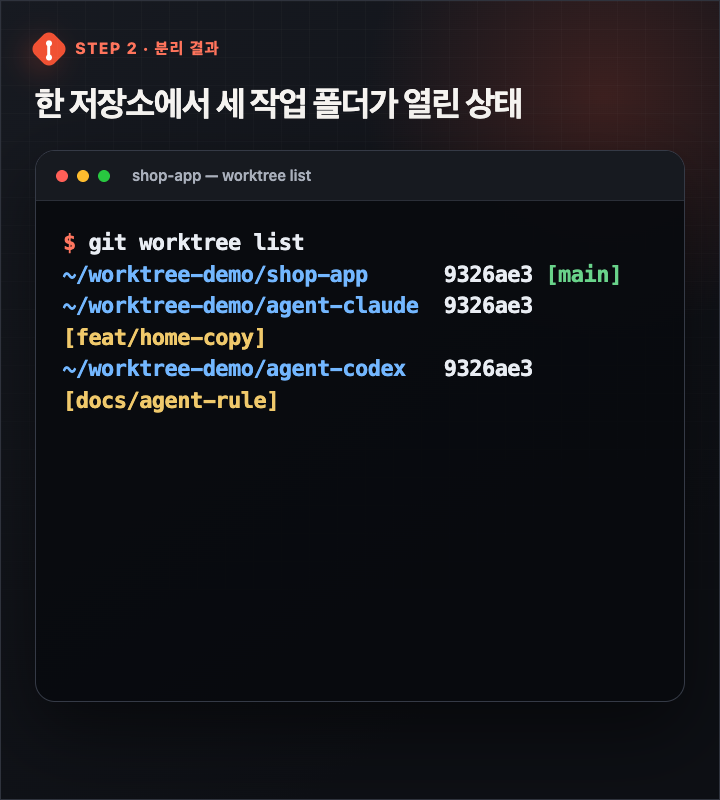
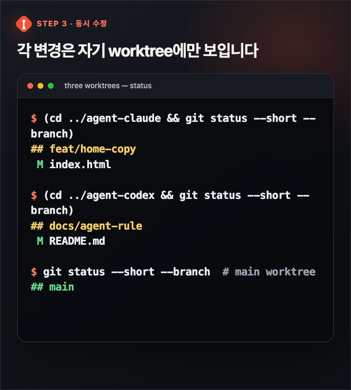
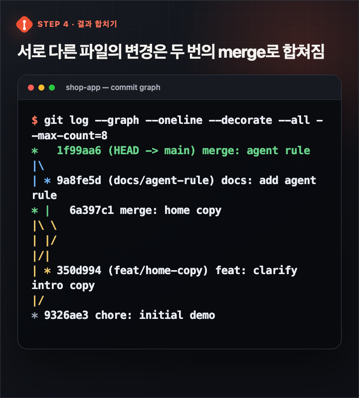
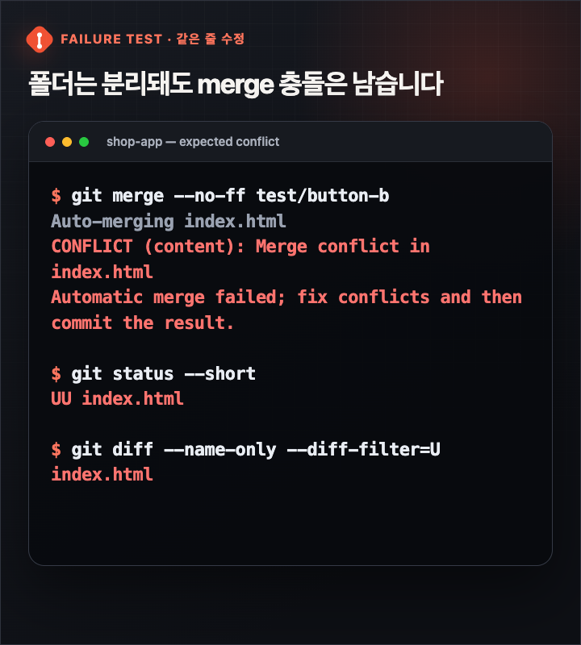
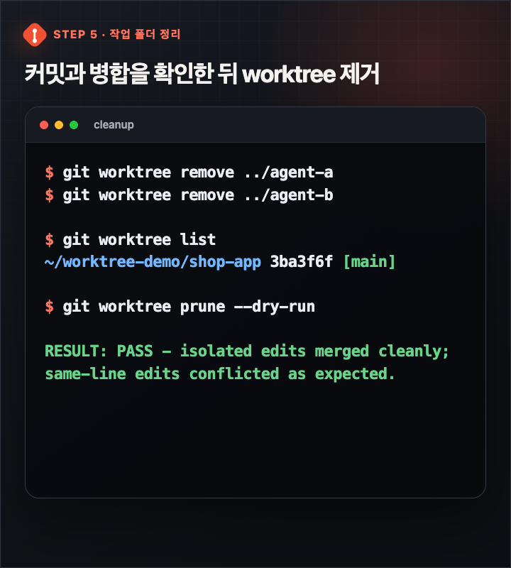

안녕하세요. dev.log입니다.
Claude Code가 기능을 만드는 동안 Codex에게 문서 정리를 맡겼는데, 두 에이전트가 같은 폴더를 보고 있다면 어떻게 될까요? 아직 저장하지 않은 수정과 새 파일이 양쪽 터미널에 동시에 나타납니다. 한쪽이 파일을 되돌리거나 이름을 바꾸면 다른 쪽 작업까지 흔들릴 수 있습니다.
가장 단순한 해결책은 에이전트 하나에 Git worktree 하나를 배정하는 것입니다. 먼저 main이 깨끗한지 확인하고, 작업마다 새 브랜치와 새 폴더를 함께 만드세요. worktree는 작업 중 파일이 섞이는 문제를 줄이지만, 두 브랜치가 같은 줄을 바꿨을 때 생기는 merge 충돌까지 없애지는 않습니다.
이 글에서는 임시 저장소에 main + linked worktree 2개를 만들었습니다. 서로 다른 파일은 정상 병합하고, 같은 줄은 일부러 다르게 바꿔 충돌을 재현했습니다. 아래 터미널 화면은 실제 실행 로그를 모바일에서 읽기 좋게 다시 조판한 것입니다. 명령과 핵심 출력은 원문을 따랐고, 임시 경로·색상·제목·줄바꿈은 공개용으로 편집했습니다.
branch만 만들 때와 무엇이 다를까
Git branch는 특정 commit을 가리키는 이름입니다. branch만 새로 만든다고 작업 폴더가 하나 더 생기지는 않습니다. 같은 폴더에서 branch를 바꾸면 그 폴더의 파일도 함께 바뀝니다.
worktree는 한 Git 저장소에 연결된 별도의 실제 작업 폴더입니다. Git 공식 문서는 기본 작업 폴더 외에 여러 linked worktree를 둘 수 있다고 설명합니다. 각 worktree는 자기 HEAD, index, 작업 파일을 가집니다. commit 객체와 일반 branch·tag ref는 저장소가 공유합니다.
| 구분 | branch만 만들기 | linked worktree 만들기 |
|---|---|---|
| 새 작업 폴더 | 생기지 않음 | 별도 경로에 생성 |
| 동시에 보는 branch | 한 폴더에서 하나씩 전환 | 폴더마다 하나씩 checkout |
| 미완성 파일 | 같은 폴더의 도구가 함께 봄 | 해당 worktree에서만 보임 |
| commit 기록 | 같은 저장소에 남음 | 같은 저장소에 남음 |
저장소를 통째로 두 번 clone하는 것과도 다릅니다. linked worktree는 하나의 object database와 일반 branch·tag ref를 공유하고 Git이 폴더 관계를 추적합니다. HEAD 같은 pseudo ref는 worktree별입니다. refs/bisect, refs/worktree, refs/rewritten 아래 ref도 공유하지 않습니다. 폴더별 파일은 나누면서 일반적인 commit과 branch 기록은 한곳에서 관리하는 구조입니다.

worktree는 보안 샌드박스가 아닙니다. 에이전트가 쓰는 계정 권한과 네트워크, 홈 디렉터리의 자격 증명은 그대로입니다. 개발 서버 포트와 외부 데이터베이스도 저절로 격리되지 않습니다. worktree가 나누는 범위는 Git의 작업 폴더와 폴더별 상태입니다.
1. main 상태부터 확인하기
저장소 루트에서 현재 branch와 변경 상태를 확인합니다.
git status --short --branch브랜치 헤더 아래에 변경 파일 행이 없다면 작업 트리가 깨끗한 상태입니다. 원격 추적 브랜치가 연결된 저장소에서는 헤더가 ## main...origin/main처럼 보일 수도 있습니다. 수정 파일이나 새 파일이 이어서 나오면 먼저 commit하거나 안전하게 보관하세요. 미완성 변경이 남은 채 worktree를 만들면 어느 작업을 기준으로 나눴는지 헷갈리기 쉽습니다.

기준 branch가 master나 develop이라면 이후 명령의 main을 그 이름으로 바꾸면 됩니다. 원격의 최신 commit에서 시작해야 한다면 git fetch와 git pull도 팀의 규칙에 맞춰 먼저 진행합니다.
2. 에이전트별 브랜치와 폴더 만들기
예제에서는 Claude Code가 화면 문구를 고치고 Codex가 운영 문서를 정리한다고 가정합니다. main과 같은 상위 디렉터리에 두 폴더를 만듭니다.
git worktree add -b feat/home-copy ../agent-claude main
git worktree add -b docs/agent-rule ../agent-codex main명령의 읽는 순서는 이렇습니다.
-b feat/home-copy: 새로 만들 branch 이름../agent-claude: 그 branch를 펼칠 새 폴더main: 작업을 시작할 commit 또는 branch

만든 결과는 원래 저장소에서 확인할 수 있습니다.
git worktree list
목록에는 폴더 경로, 현재 commit, checkout한 branch가 나옵니다. 같은 branch는 안전장치 때문에 여러 worktree에서 동시에 checkout할 수 없습니다. 두 작업의 branch 이름을 반드시 다르게 만드는 이유입니다.
이제 터미널을 두 개 열어 각각의 폴더에서 에이전트를 실행합니다.
Claude Code를 실행할 터미널입니다.
cd ../agent-claude
claudeCodex를 실행할 터미널입니다.
cd ../agent-codex
codexClaude Code에는 이 과정을 줄여 주는 claude --worktree feature-auth 방식도 공식 문서에 안내돼 있습니다. 여기서는 Claude Code와 Codex CLI에 같은 원칙을 적용하기 위해 Git 명령으로 직접 만들었습니다.
Codex 앱의 흐름은 별도입니다. 새 작업의 composer 아래에서 Worktree를 선택하세요. 공식 Worktrees 문서에 따라 시작 branch를 지정하고 요청을 보내면 앱이 worktree를 만듭니다. 이 글의 수동 명령과 앱의 자동 흐름을 섞어 실행할 필요는 없습니다.
3. 지시는 폴더 경계까지 함께 적기
폴더만 나눴다고 작업 범위까지 자동으로 좋아지는 것은 아닙니다. 두 에이전트에게 같은 설정 파일이나 lockfile을 고치라고 하면 나중에 충돌할 가능성이 커집니다. 처음 지시할 때 담당 파일과 금지 영역을 함께 적는 편이 좋습니다.
Claude Code: index.html의 첫 화면 문구만 수정합니다.
README.md와 package-lock.json은 건드리지 않습니다.
Codex: README.md에 에이전트 운영 규칙을 추가합니다.
index.html과 package-lock.json은 건드리지 않습니다.Codex 재현 테스트에서 Claude용 worktree는 index.html만 수정했습니다. Codex용 worktree는 README.md만 수정했습니다. 이후 각 폴더에서 git status를 확인하자 자기 변경만 나타났고, 원래 main 폴더는 깨끗하게 남았습니다.

.env, node_modules, 빌드 결과처럼 Git이 추적하지 않는 파일은 새 worktree에 자동으로 준비되지 않을 수 있습니다. 비밀 값은 저장소에 commit하지 말고, 프로젝트가 정한 방법으로 worktree마다 환경 파일을 준비하세요.
실행 자원도 따로 살펴야 합니다. 개발 서버는 3000, 3001처럼 포트를 나누고, 같은 로컬 DB를 건드리는 작업은 병렬 실행에서 빼는 편이 안전합니다.
4. 각 worktree에서 확인하고 commit하기
에이전트가 작업을 마치면 곧바로 main에서 합치지 말고, 각 worktree 안에서 변경과 테스트를 먼저 확인합니다.
Claude용 worktree부터 확인합니다.
cd ../agent-claude
git status --short
git diff
npm test
git add index.html
git commit -m "feat: clarify intro copy"Codex용 worktree도 같은 순서로 확인합니다.
cd ../agent-codex
git status --short
git diff
npm test
git add README.md
git commit -m "docs: add agent rule"npm test는 예시입니다. 프로젝트에 맞게 lint, type check, unit test, build 명령으로 바꾸세요. 검증과 commit도 각 worktree에서 끝내야 합니다. 에이전트가 만든 변경을 원래 main 폴더에서 한꺼번에 stage하면 분리한 의미가 흐려집니다.
5. main에서 하나씩 merge하기
두 작업이 모두 commit됐다면 원래 저장소의 main으로 돌아와 하나씩 합칩니다.
cd ../shop-app
git switch main
git merge --no-ff feat/home-copy
npm test
git merge --no-ff docs/agent-rule
npm test한꺼번에 합치지 않고 merge 사이에 검증을 넣으면 어느 변경에서 문제가 생겼는지 찾기 쉽습니다. 직접 실험에서는 서로 다른 파일을 바꾼 두 branch가 모두 정상 병합됐습니다.

작업 단위가 작다면 Pull Request를 두 개 만들어 CI와 리뷰를 거친 뒤 차례로 merge해도 됩니다. 로컬 merge와 PR 방식의 차이는 검토 경로일 뿐, worktree별로 branch와 commit을 분리한다는 원칙은 같습니다.
같은 줄을 고쳤을 때 남는 충돌
worktree의 장점을 과장하지 않기 위해 실패 조건도 같은 fixture에서 시험했습니다. 두 branch가 index.html의 같은 버튼 문구를 서로 다르게 수정한 뒤 순서대로 merge했습니다. 첫 branch는 들어갔지만 두 번째 merge는 exit code 1로 멈췄고, 파일은 UU 상태가 됐습니다.

즉 worktree가 막아 주는 것은 작업 중인 파일을 두 에이전트가 같은 폴더에서 덮어쓰는 문제입니다. 나중에 Git이 서로 다른 commit을 합칠 때 생기는 의미 충돌은 사람이 판단해야 합니다.
충돌이 나면 먼저 미해결 파일을 확인합니다.
git status
git diff --name-only --diff-filter=U두 변경을 어떻게 합칠지 결정할 수 있다면 파일의 conflict marker를 정리하고 검증한 뒤 commit합니다.
git add index.html
npm test
git commit두 번째 merge 자체를 취소하고 작업 범위를 다시 나눠야 한다면 다음 명령으로 직전 상태로 돌아갑니다.
git merge --abort충돌 가능성이 큰 작업은 처음부터 병렬로 쪼개지 않는 편이 낫습니다. 공용 schema, 핵심 설정, lockfile, 대규모 rename처럼 여러 파일의 기준을 동시에 바꾸는 작업이 여기에 해당합니다.
6. commit과 병합을 확인한 뒤 지우기
변경이 commit됐고 필요한 branch가 merge됐는지 확인한 뒤 linked worktree를 제거합니다. Finder에서 폴더만 지우기보다 Git 명령을 쓰세요.
git worktree remove ../agent-claude
git worktree remove ../agent-codex
git worktree list추적되지 않은 변경이나 수정이 남아 있으면 Git은 기본적으로 제거를 거부합니다. 이때 바로 --force를 붙이기보다 해당 폴더에서 git status를 확인하고 commit, stash, 폐기 중 하나를 결정해야 합니다.
폴더를 이미 수동으로 지워 stale metadata가 의심된다면 실제 정리 전에 대상부터 봅니다.
git worktree prune --dry-run
git worktree prune
worktree를 제거해도 branch는 자동으로 사라지지 않습니다. merge가 끝났고 더 보관할 이유가 없을 때만 별도로 삭제합니다.
git branch --merged main
git branch -d feat/home-copy
git branch -d docs/agent-rule어떤 작업을 병렬로 나누면 좋을까
파일 수보다 공유하는 결정의 수를 기준으로 보면 판단이 쉬워집니다.
| 작업 조합 | 권장 | 이유 |
|---|---|---|
| 화면 문구 수정 + README 정리 | 좋음 | 담당 파일과 검증 기준이 분명함 |
| 독립 컴포넌트 2개 구현 | 좋음 | interface가 고정돼 있으면 충돌 면적이 작음 |
| 기능 코드 + 그 기능의 테스트 | 조건부 | 구현이 자주 바뀌면 테스트도 계속 흔들림 |
| 공용 schema 수정 + API 구현 | 주의 | 한쪽 결정이 다른 쪽 전제에 직접 영향 |
| package 구조 변경 + 대규모 rename | 나쁨 | 경로와 import, lockfile 충돌이 넓게 퍼짐 |
처음에는 작은 작업 두 개로 시작하는 것이 좋습니다. 담당 파일이 겹치지 않고, 각각 독립적으로 테스트할 수 있으며, merge 순서를 바꿔도 결과가 크게 달라지지 않는 조합을 고르세요.
폴더와 터미널을 매번 직접 관리하는 일이 번거로울 수 있습니다. 이때는 Orca로 여러 CLI 에이전트를 worktree에서 실행하는 방법처럼 관리 도구를 붙일 수 있습니다. 도구가 달라져도 아래 순서는 유지됩니다.
깨끗한 기준 branch 확인 → 작업별 worktree 생성 → 각 폴더에서 변경·검증·commit → main에서 하나씩 merge → linked worktree 제거
다음 병렬 작업에서 바로 자동화부터 시작할 필요는 없습니다. README.md 수정과 작은 UI 문구 변경처럼 서로 만나지 않는 두 일을 고른 뒤, worktree 두 개만 만들어 보세요. git worktree list에서 폴더와 branch가 나뉜 모습이 확인되면 가장 중요한 첫 단계는 끝난 것입니다.